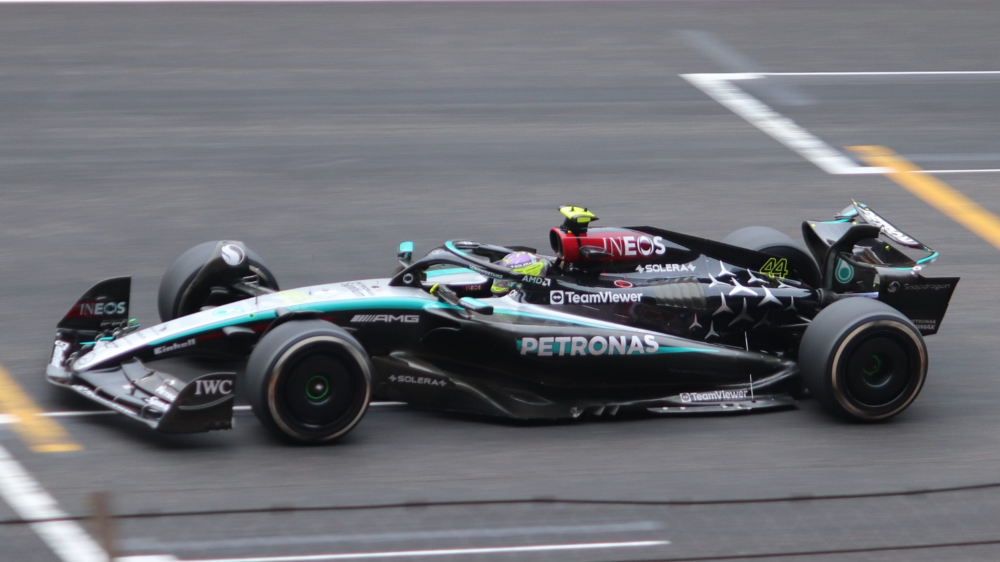
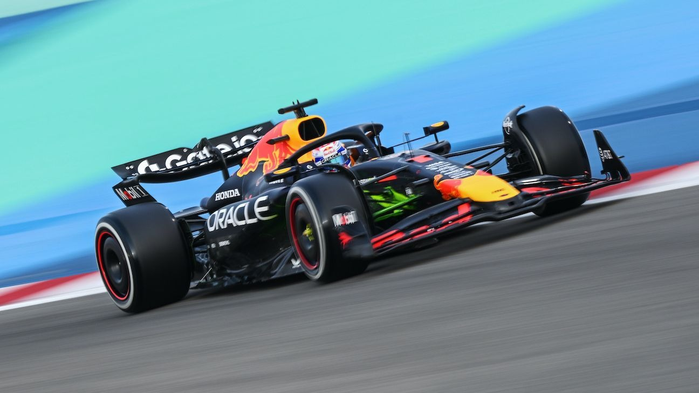
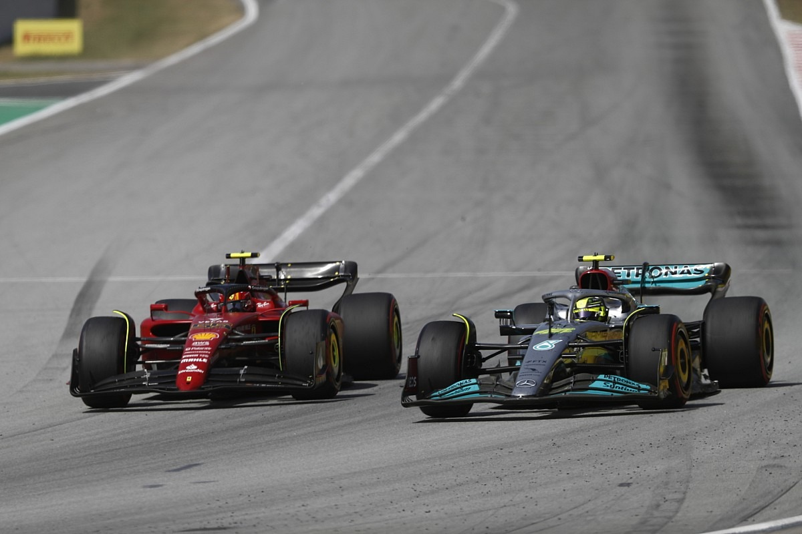
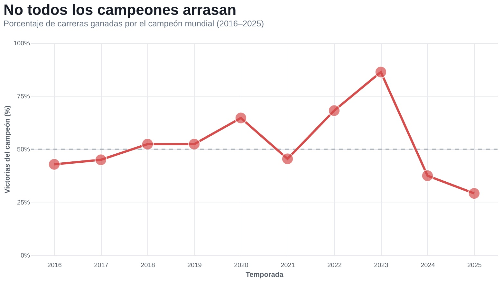

No todos los campeones arrasan: una década de dominio cambiante en la Fórmula 1
Antonia Castillo B.
Los últimos diez campeonatos de Fórmula 1 muestran que el título no depende solo de cuántas veces se cruza primero la meta, sino también de una estrategia capaz de considerar los distintos factores del mundo motor.
Mercedes y la consolidación de Hamilton

Entre 2016 y 2020, Mercedes sostuvo su ventaja técnica y Lewis Hamilton fue campeón cuatro veces consecutivas. Su porcentaje de victorias pasó del 45% en 2017 al 64,71% en 2020, consolidando su dominio a lo largo de esos años.
Pero la tendencia no fue continua. En 2021, Max Verstappen se consagró con el 45,45% de las carreras ganadas, en una temporada exigente y muy disputada, en la que el título estuvo cerca de quedar en manos del piloto de Mercedes.
Nuevas reglas, nuevas oportunidades
Una parte del cambio se relaciona con las nuevas reglas. El límite presupuestario introducido en 2021 buscó reducir las diferencias de recursos, y las escuderías intentaron adaptarse rápidamente. A su vez, los autos de 2022 fueron rediseñados para facilitar que los pilotos se siguieran de cerca.
Sin embargo, modificar el reglamento no iguala inmediatamente el rendimiento: también puede favorecer a quien interprete mejor las soluciones técnicas.
2023: el dominio excepcional de Red Bull

Eso ocurrió con Red Bull en 2023. Su RB19 combinó una aerodinámica eficiente, una suspensión que ayudaba a aprovechar el efecto suelo y una gran velocidad en rectas. El resultado fue excepcional: la escudería ganó 21 de 22 grandes premios y Verstappen se llevó 19, equivalentes al 86,36% del calendario. Fue una ventaja técnica excepcional, no un efecto automático de las nuevas reglas.
Durante los años de Hamilton se observa una tendencia al aumento de la concentración de victorias a medida que consolidaba su posición como campeón mundial. Verstappen parecía seguir el mismo camino: pasó del 45,45% en 2021 al 86,36% en 2023.
2024 y 2025: ganar el título con menos victorias

Ese dominio no tardó en romperse. En 2024, las mejoras de McLaren, especialmente las introducidas en Miami, y los avances de Ferrari y Mercedes pusieron fin a la superioridad de Red Bull. Siete pilotos distintos ganaron carreras; Verstappen conservó el título, pero su porcentaje de victorias cayó al 37,50%.
Así, mientras Hamilton fortaleció progresivamente su superioridad durante cuatro campeonatos, Verstappen experimentó un ascenso más pronunciado y una caída mucho más repentina, pese a conseguir su cuarto título consecutivo.
En 2025, Lando Norris fue campeón con siete triunfos en 24 pruebas (29,17%), mientras su compañero Oscar Piastri también sumó siete.
Dominar los domingos y ganar el Mundial

La evolución de estos porcentajes no demuestra que cada campeonato haya sido más reñido en puntos. Sí revela algo concreto: durante una misma década, la proporción de victorias del campeón varió enormemente.
En la F1, dominar los domingos y ganar el Mundial no son exactamente lo mismo. Esa diferencia muestra que este deporte tiene espacios que no son fáciles de predecir.